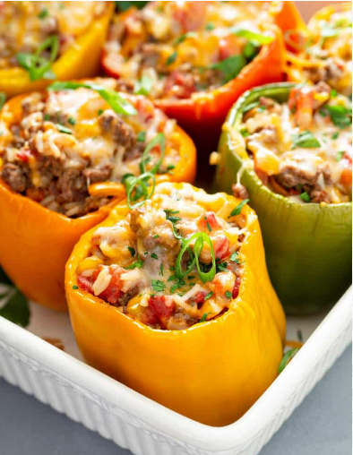

Bell Pepper

Description
Stuffed bell peppers are a classic and hearty dish that features vibrant bell peppers filled with a flavorful mixture of ingredients.
Ingredients
- 4 large bell peppers (anny color you prefer)
- 1 pound ground beef or turkey
- 1 cup cooked rice
- 1 small onion, finely chopped
- 2 cloves garlic, minced
- 1 can diced tomatoes
- 1 cup tomato sauce
- 1 teaspoon dried oregano
- 1 teaspoon dried basil
- Salt and pepper to taste
- 1 cup shredded cheese
- Olive oil for cooking
- Fresh parssley or basil for garnish
Instructions
- Preheat yuor oven to 350oF (175oC).
- Cut the tops off the bell peppers and remove the seeds and membranes. Rinse the throughly.
- In a large skillet, heat a tablespoon of olive oil over medium heat. Add the chopped onion and garlic and saute for about 2-3 minutes until they become fragrant and translucent.
- Add the ground beef or turkey to the skillet. Cook it until it's browned and cooked through, breaking it up with a spoon as it cooks. Drain any excces fat.
- Stir in the cooked rice, diced tomatoes (with their juice), oregano, basil, salt and pepper. Let it simmer for about 5 minutes to combine the flavors.
- Fill each bell pepper with the meat and rice mixture. Place them in a baking dish.
- Pour the tomato sauce over the stuffed peppers.
- cover the baking dish with foil and bake in the preheated oven for about 30-35 minutes, or until the peppers are tender.
- Remove the foil, sprinkle the shredded pepper, and return them to the oven . Bake for additional 10 minutes, or untill the cheese is melted and bubbly.
- Remove the stuffed pepers from the oven and let them cool for a few minutes before serving.
Back to top